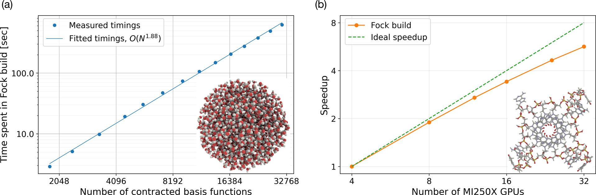

Pushing the limits#
VeloxChem has the stated goal to be science-enabling. Behind this term there are a multitude of software requirements that we find important and strive against, including:
coverage of dense 3D system of sizes up to and beyond 500 atoms in the quantum region
accurate description of electronically excited states that show a more diffuse character than the ground state
stable and reliable convergence of iterative equation solvers also with use of diffuse basis functions
time-efficient prototyping of novel scientific approaches
transparent exposure of data structures to enable in-depth analyses for standard users
flexible ways to interact with other components of the simulation (such as molecular dynamics, parameterizing the embedding, and data visualization)
a fast return of results so as to remain in synchronicity with experimental project partners
For the most parts, VeloxChem implements few schemes to improve the formal scaling of the calculation but rather focus to implement the general and stable algorithms efficiently for HPC cluster computing.
Basically, the only underlying approximation made is the adoption of Cauchy–Schwarz screening in the evaluation of electron-repulsion integrals, but also this is done with rigor using a small screening threshold per default.
Performance and scaling#
Laptop#
Desktop#
HPC-CPU#
Polarizabilities and C6 dispersion coefficients
With a highly efficient implementation of the linear complex polarization propagator in VeloxChem, Hartree–Fock and Kohn–Sham density-functional theory calculations were performed of the frequency-dependent polarizabilities for fullerenes consisting of up to 540 carbon atoms. Results for the static polarizabilities and C6 coefficients show scalings of \(N^{1.2}\) and \(N^{2.2}\), respectively, thereby deviating significantly from the previously reported values obtained with use of semi-classical/empirical methods. See Ref. [BAL+21] for further details.

HPC-GPU#
GPU-Accelerated Fock Matrix Construction
Two separate scaling aspects of the GPU implementation of the ERI-part of the Fock matrix construction can be shown: (a) a system size scaling illustrated by the wall times (in seconds) on a single GPU node obtained for spherical water clusters of varying sizes (the inset shows the largest cluster). (b) a strong scaling with respect to the number of GPUs (each with two GCDs), illustrated here by a G-quadruplex including all nucleotides where the phosphate group has been neutralized by adding a hydrogen.
{kind=link}
Read more in our article J. Phys. Chem. A, 2025, 129, 2, 633-642 [LLN25]